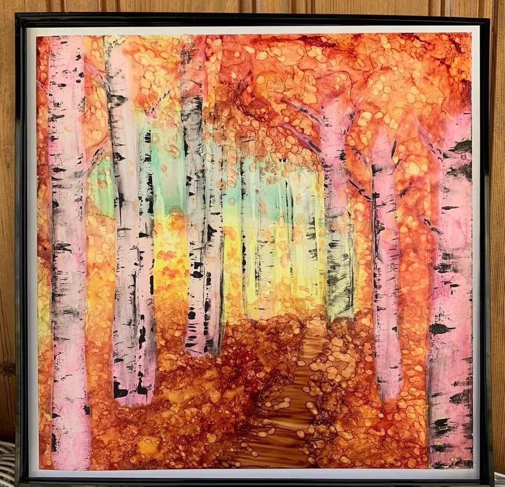
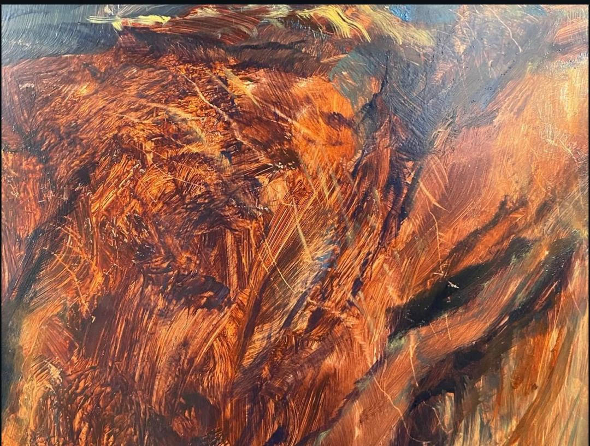
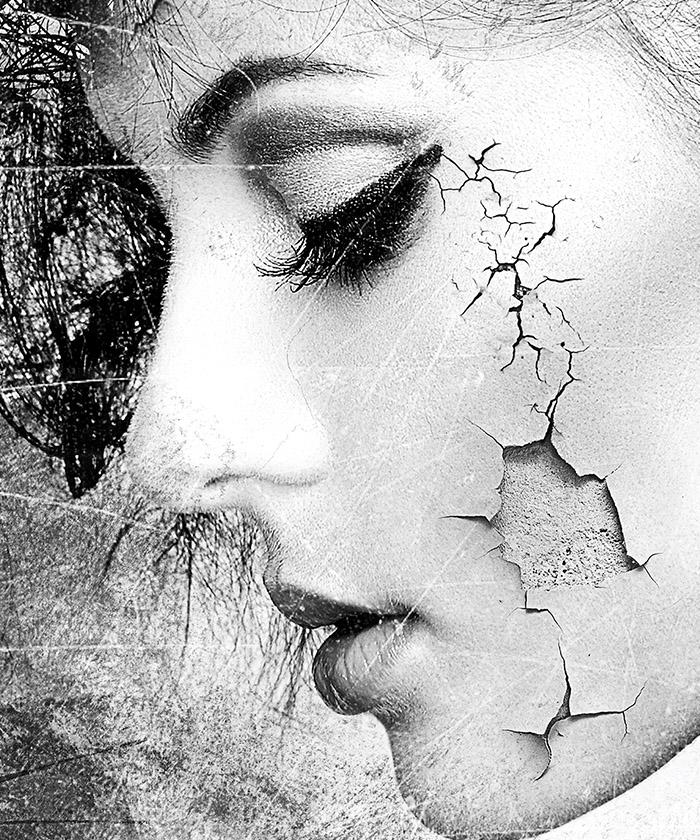
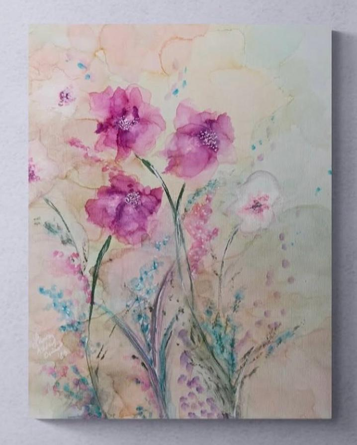
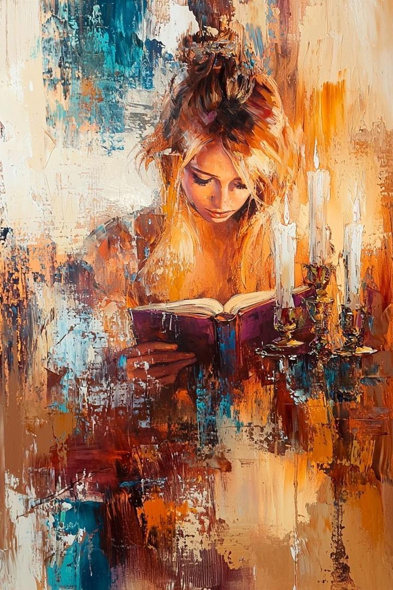
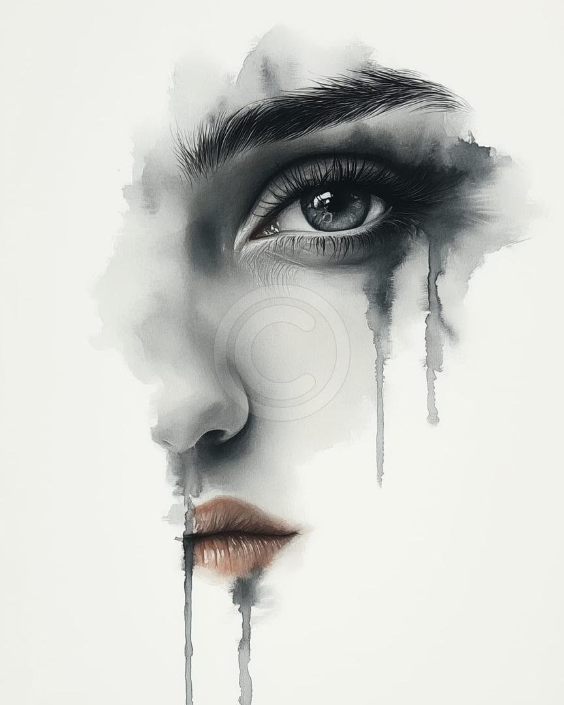
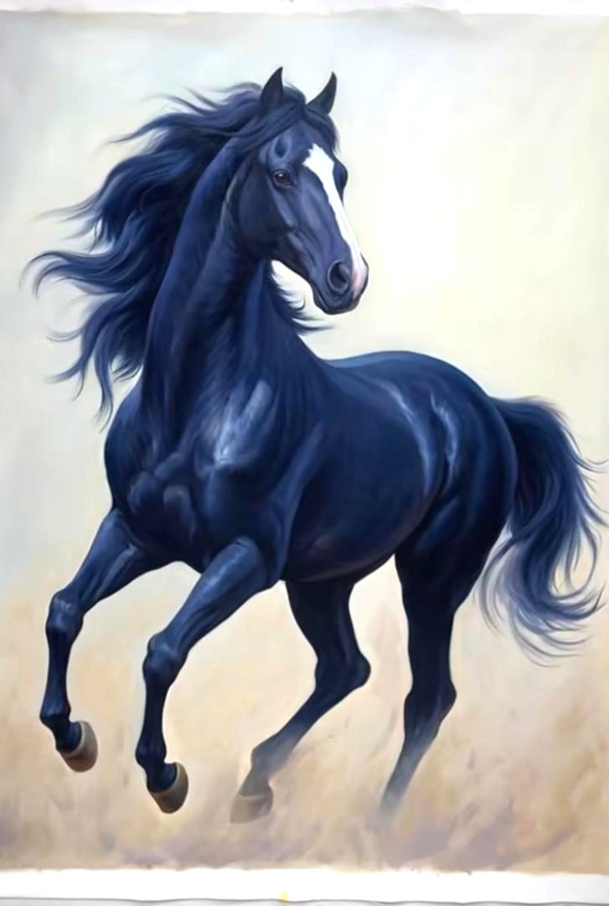

Exposition – Galerie d’Art

Regard Intérieur
Un autoportrait abstrait inspiré par l’introspection.

Souffle Naturel
Un hommage aux formes organiques de la nature.

Eclats du Silence
Un visage fissuré en noir et blanc qui exprime des émotions figées.un portrait silencieux entre beauté et douleur.

Murmures Florau
Des fleurs pastel qui semblent danser au rythme du vent.Une scéne douce et vivante inspirée de la nature.

les Murmures de la lumiére
Dans le silence doré d'une nuit éternelle, le mot prennent feu sous le Souffle des bougies.

Larmes d'Encre
Un regard figé dans le temps, où les emotions s'effacent comme de trace de pluie sur le papier.

L'Elan sauvage
Un éclair d'azur fend l'horizon,symbole d'une liberté indomptable peinte au galop du vent.

Silence Dance du Tait
Une composition en environemen, guidée par l'énergie du crayon.